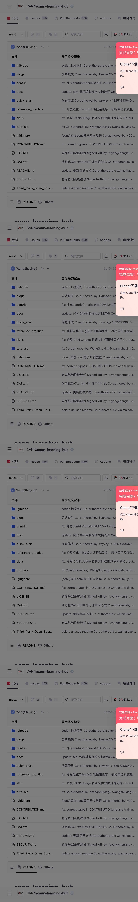
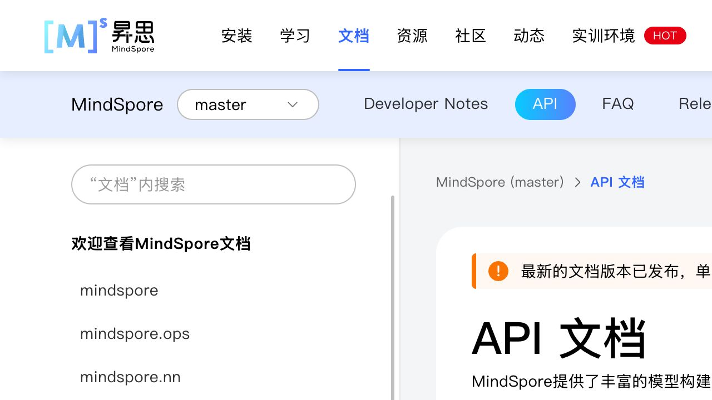
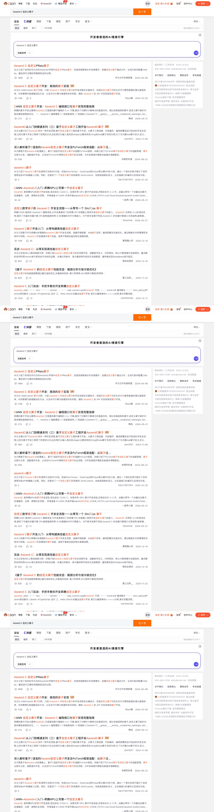

提出需求
“要复用、定制还是新写？我用什么路径？”
AI 对话开源后，CANN、Mind 系列、GitCode、官方文档、CSDN 与 AI 助手共同构成新的开发环境。问题不再是“社区有没有内容”，而是：开发者与 AI 能否从分散资产中得到可信、可执行、可验证的下一步？
传统开发者从社区拉取信息，自己负责拼装、判断与验证。大模型将发现、摘要、代码初稿和部分排障前置；但版本、环境、可信来源、执行结果与责任归属仍无法被一句回答消除。
| 阶段 | 开源前 / 传统社区旅程 | 开源 + AI 协作旅程 | 体验设计的新问题 |
|---|---|---|---|
| 发现 | 搜索官网、教程、论坛，找到入口才开始。 | 用户先把目标交给 AI；AI 同时检索官方、GitCode、CSDN 和模型记忆。 | 谁是可信源？ AI 是否能优先拿到版本正确的官方答案？ |
| 判断 | 开发者自己判断复用、定制或从零开发。 | AI 给出路径与代码建议，用户需判断它是否适配自己的芯片、框架与版本。 | 为什么是这条路？ 需要暴露适用边界与替代方案。 |
| 执行 | 跨文档、仓库、安装包与本地环境手动拼步骤。 | AI 编排步骤，但环境、依赖和命令仍在多个触点中。 | 下一步可不可执行？ 要把任务依赖、环境预检和命令连起来。 |
| 排障 | 搜报错、问论坛、提 Issue / 工单，等待经验出现。 | AI 先解释错误；复杂问题仍需带版本、日志和上下文进入人类支持链。 | AI 何时该停？ 需要可信升级、可复现上下文和结果回写。 |
| 沉淀 | 经验散落在帖、博客、Issue 与个人笔记中。 | 每一次成功/失败都可被结构化为 AI 下次可引用的任务证据。 | 经验怎样可信回流？ 需要版本、硬件、验证状态、贡献者与失效机制。 |
这是研究假设，以下以 Ascend C 样例和公开资产实跑验证其合理性；是否能提升完成率，仍需要后续 NPU 实机与开发者测试验证。
角色：具备 C/C++ 基础、希望让一个现有算子不能直接覆盖的计算在昇腾上运行的开发者。Add 是最小验证样例；真实业务会增加框架接入、复杂 shape、精度与性能约束。
“要复用、定制还是新写？我用什么路径？”
AI 对话Ascend C、CATLASS、Triton 与已有算子库的适用边界。
昇腾算子场景实现、Tiling、框架接入、版本与芯片匹配。
文档 + GitCode安装、命令、依赖、设备条件与预期输出必须闭合。
CANN / HiDevLab / 本地AI 初诊 → 可信案例 → Issue / 论坛 / 工单升级。
AI + 社区支持记录精度、性能、版本和修复路径，反哺代码与知识。
GitCode 社区以下不是假设的站点结构，而是本次公开页面实际访问到的资产与能力。它们各自合理，却需要开发者或 AI 在任务中重新拼装。
证据只陈述本次页面实际可见的内容；诸如“能提升留存/成功率”属于下一轮需要测试的假设。

页面将算子开发方式列为 Ascend C、CATLASS、Triton，并排布新手、进阶、深度创新的环境、实现、编译运行和调试调优路径。
实测 URL：hiascend.com/cn/developer/operator?tab=ascendc
CANN/asc-devkit 9.0.0 的 Add 样例给出实现、Tiling、环境变量、CMake、运行命令与精度成功信号。
实测 URL：gitcode.com/cann/asc-devkit
community 仓明确承载治理、SIG、Issue/PR、会议、邮件列表、发布流程；页面还说明已集成代码仓库智能体。
实测：857 次提交、241 位贡献者、214,974 总下载次数（页面显示）
cann-learning-hub 页面可见 quick_start、tutorials、reference_practice 等目录，且内容修改通过 Issue / PR 回流。
实测：155 Issues、160 PR、245 次提交（页面显示）
MindSpore API 文档独立组织框架模块、设备后端与 PyTorch API 映射；开发者做框架集成时必须跨这一层。
实测 URL：mindspore.cn/docs/zh-CN/master
搜索页显示约 13,316 个相关结果，结果既有 2024 官方生态文章，也有不同版本、不同作者的教程和问答，可信性与时效需要二次判断。
实测关键词：Ascend C 自定义算子这不是最终 Persona 定稿，而是根据公开资产和算子任务提出的可验证研究分组。它们的成功标准不同，因此不能用同一个“用户中心”入口处理。
要在可用环境里运行第一个样例，确认“我能在昇腾上开发”。
成功证据：最小案例通过要把模型、框架与算子能力组合成可交付的训练或推理方案。
成功证据：业务链路上线要判断复用/定制/自研，并处理 Tiling、编译、精度和性能。
成功证据：可验证的算子包要让自己的修复、案例或新能力被社区接收、治理与持续维护。
成功证据：Issue/PR/SIG 产生影响用户可能不先访问社区，而是先问 AI。社区仍然被使用，只是以引用、代码、检索结果和工具调用的方式出现。价值指标应从 PV 转向“权威内容被正确采用、任务是否完成”。
GitCode、文档、学习仓、Mind 系列、CSDN 各有价值。真正的摩擦不是缺链接，而是 AI 与用户难判断版本、芯片、框架和案例是否适用于当前任务。
它需要可被准确引用的“任务单元”：目标、前置条件、版本矩阵、代码、命令、预期结果、失败分支、来源和最后验证时间。它对人同样更易用。
大模型可以总结 CSDN 和文档，却不能天然保证当前环境可跑。官方社区可以标注维护者、CI/真机验证、Issue 状态、兼容矩阵与回归结果，成为答案的可信落点。
先让用户在关键任务中少走弯路：AI 路径能首跑、错误能收敛、成果能被看见。任务完成后的“一键回流”才是低摩擦贡献入口，而不是把贡献作为首次访问门槛。
AI 回答错并不可怕；可怕的是答案、环境和结果无法回链。每次确认、修复、反例都应能更新权威任务包，并向 AI 助手暴露“有效/过期/待验证”状态。
建议不再用“把更多资料汇集到社区”定义成功，而用下面四种能力定义产品方向。它们可渐进建设，不要求一次重做所有内容系统。
以“我要开发自定义算子 / 迁移一个模型 / 排查一个错误”等任务入口，给出清晰的成功标准和最小实践。用户不需要先理解社区结构，也不需要先注册成为贡献者。
在失败处保留 AI 的上下文、权威引用、类似已验证案例和人工升级路径。真正形成复访的，不是更多资讯，而是开发者相信“下次卡住这里能让我继续推进”。
当用户跑通或修复后，自动生成可编辑的复现条件、版本、步骤和结果摘要；再由用户选择回写到案例、Issue、文档修订或 PR。
将贡献映射到被复用的任务包、解决的失败类型、SIG 影响和被 AI 引用的可信案例。对进阶开发者，这比单纯内容消费更有吸引力。
当前报告是多触点证据与单一算子样例的第一轮诊断。下面把“研究”与“产品试验”连接起来，避免直接从概念跳到大改版。
{kind=link}
{kind=link}
{kind=link}